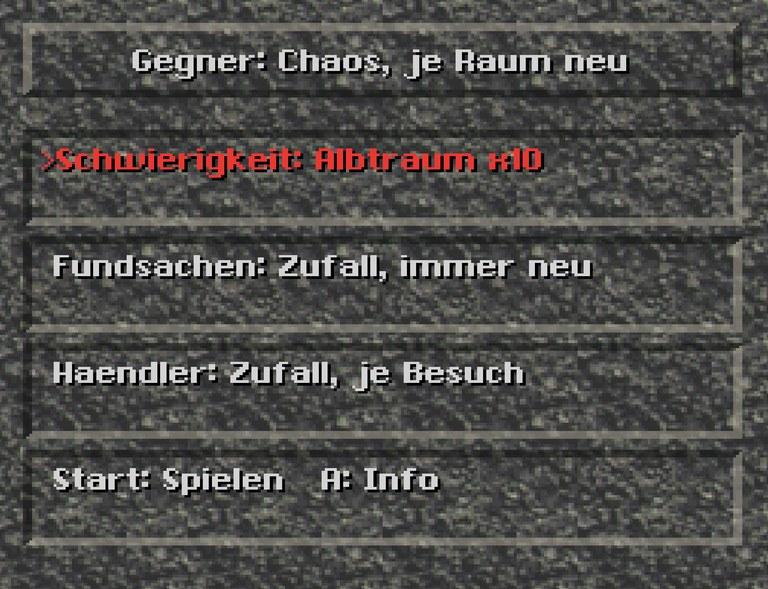
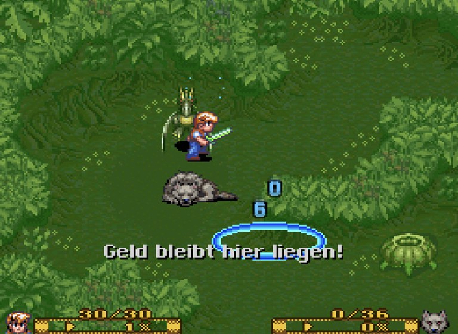
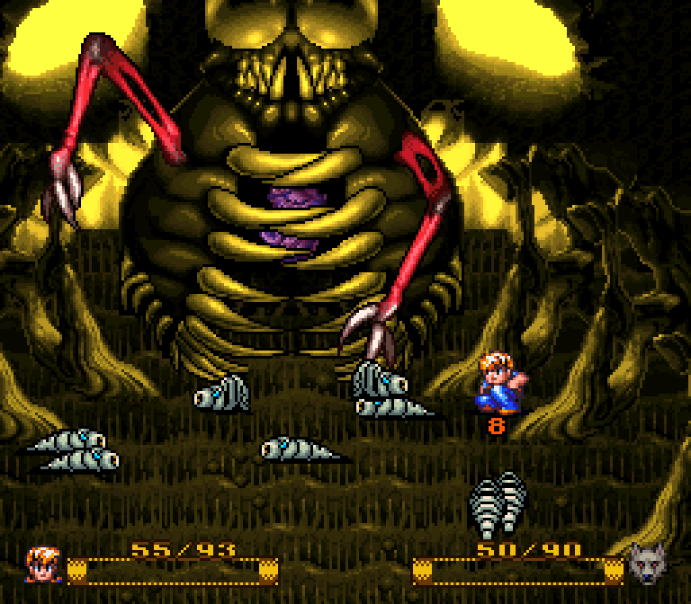
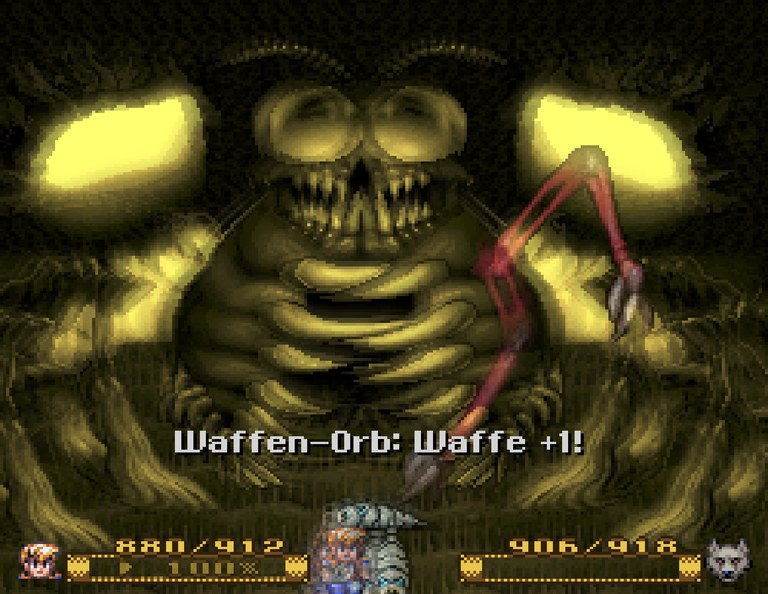
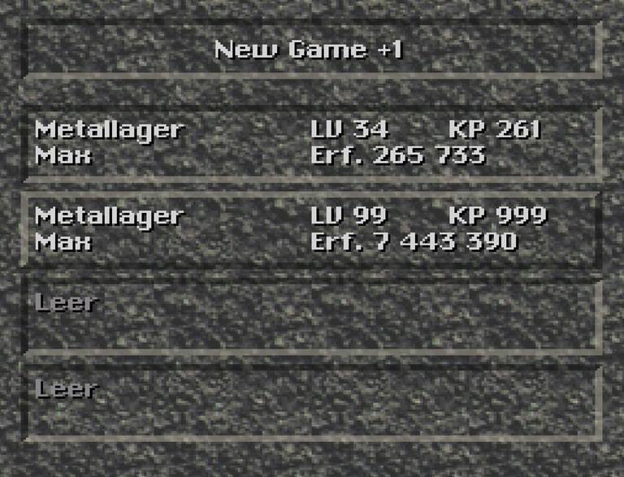
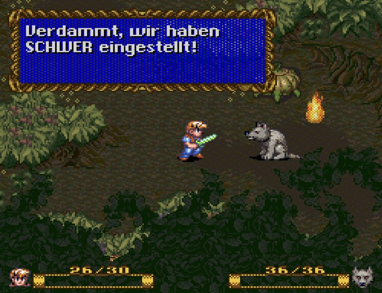
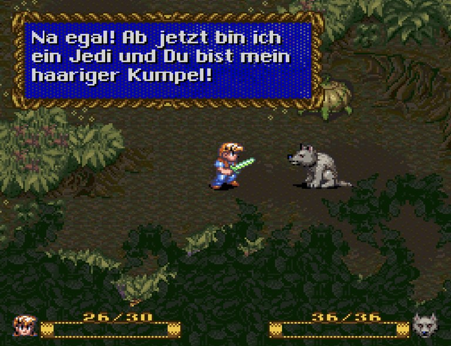
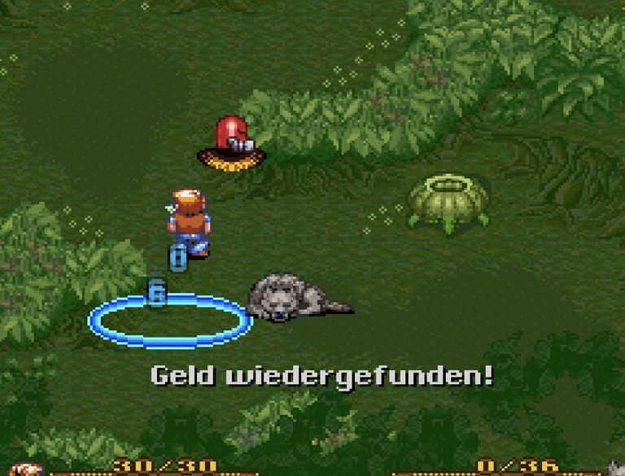
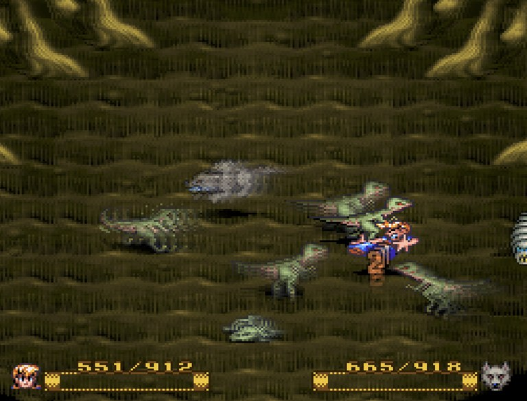
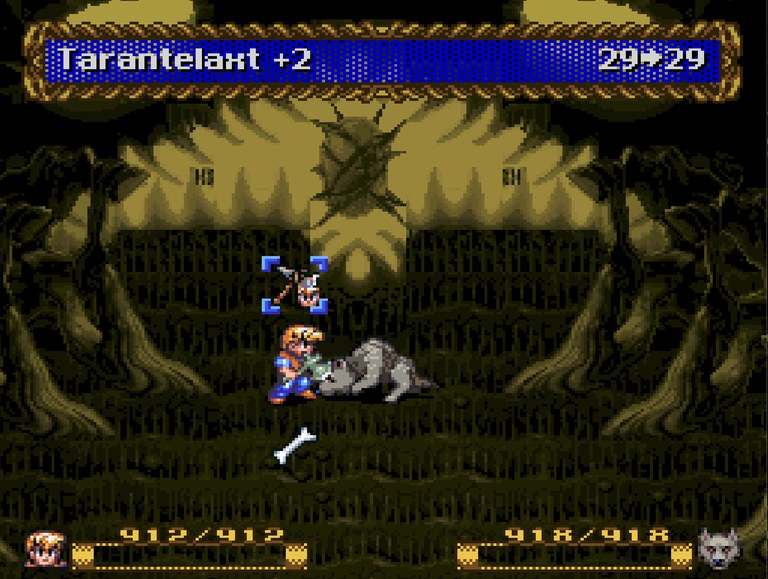

Video
Direkt auf YouTube: youtu.be/baQhrvWeEew
Was ist neu?

Einstellungen vor dem Start
Gegner original, ähnlich, aus dem Gebiet oder komplettes Chaos – fest oder je Raum neu. Schwierigkeit von Normal bis Albtraum x10, Fundsachen und Händler wahlweise zufällig.

Tod wie bei Dark Souls
Statt Hauptmenü wachst du am Raumeingang auf. Dein Geld bleibt an der Todesstelle liegen – ein blauer Kreis zeigt sie. Hol es zurück, bevor du noch einmal stirbst!

Der Goldene Vulgor
Nach dem ersten Sieg wartet einmal pro Durchgang ein goldener Vulgor – fünfmal so stark. Wer stirbt, landet vor dem Eingang und versucht es erneut.

Waffen-Orb & Vulgors Rache
Der Sieg bringt einen Waffen-Orb: deine ausgerüstete Waffe wird +1. Danach stürmen zehn starke Raptoren die Arena.

New Game+
Nach dem Abspann startest du mit Level, Waffen und Ausrüstung neu – die Gegner werden mit jedem Durchgang stärker, Waffen sammeln +N.

Und noch mehr
Echte Waffenkraft im Menü, Startwaffe je Modus (bis zum Laserschwert), Erfahrung und Geld je nach Schwierigkeit, Infoseite mit QR-Codes im Einstellungsmenü.
So spielst du
- Besorge dir deine eigene deutsche ROM von Secret of Evermore (SNES). Prüfsumme der passenden Datei (ohne Kopfteil):
CRC32 27F60E77. - Lade den Patch (BPS) herunter.
- Öffne den Rom Patcher JS im Browser (oder Floating IPS / Flips), wähle deine ROM und den Patch und klicke auf „Patch anwenden“.
- Starte die neue ROM in deinem Emulator (z. B. OpenEmu, snes9x, Mesen, RetroArch). Im Titelbild steht dann SOULS of EVERMORE.
- Bei „Neues Spiel“ erscheint das Einstellungsmenü: Gegner, Schwierigkeit, Fundsachen und Händler wählen – mit Start geht’s los.
Schwierigkeitsstufen
| Stufe | Gegner (Leben & Angriff) | Erfahrung & Geld |
|---|---|---|
| Normal | wie im Original | wie im Original |
| Schwer | x1,5 | x1,5 |
| Sehr schwer | x2 | x2 |
| Extrem | x3 | x3 |
| Wahnsinn | x5 | x5 |
| Albtraum | x10 | x10 |
Aus dem Spiel









Ideen & Forum
Du hast eine Idee für die nächste Version, einen Fehler gefunden oder willst einfach von deinem Albtraum-Durchgang erzählen? Im Forum sammeln wir Ideen und beantworten Fragen.
Zum Forum (GitHub Discussions) Neue Idee einreichen
Zum Schreiben brauchst du ein kostenloses GitHub-Konto.
♥ Spenden
Souls of Evermore ist kostenlos. Wenn dir die Mod Spaß macht, freue ich mich über ein Trinkgeld – jeder Betrag hilft, weiterzubauen.
Ethereum (ETH)
0xcDf1355E4365A2ad842F0333E4737372D2128064Bitcoin (BTC)
bc1pfky3u0htczylv8tdf2jjcclhdc005e294rljvcwutcwjgqak67rswl2nv3Solana (SOL)
3paG1KXBdFamy7cBVxvHj1yKQ9XGgm4bWHzYQhDoqNKJHäufige Fragen
Welche ROM brauche ich?
Die deutsche SNES-Version von Secret of Evermore, ohne Änderungen. Die passende Datei hat (ohne 512-Byte-Kopfteil) die Prüfsumme CRC32 27F60E77. Der Patch funktioniert nicht mit der englischen oder französischen Version.
Wo bekomme ich die ROM?
ROMs werden hier nicht verteilt. Erstelle eine Sicherungskopie deines eigenen Moduls (z. B. mit einem Retrode oder ähnlichem Gerät).
Funktioniert das auf echter Hardware?
Getestet ist die Mod in Emulatoren (OpenEmu/snes9x, Mesen). Die ROM wird auf 4 MB erweitert – auf echter Hardware brauchst du ein Flash-Modul, das 4-MB-HiROM unterstützt (z. B. SD2SNES/FXPak). Ungetestet.
Kann ich meine alten Spielstände weiterverwenden?
Spielstände aus dem Original lassen sich laden, die Mod-Einstellungen (Schwierigkeit, Zufall …) wählst du aber nur beim Start eines neuen Spiels. Für das volle Erlebnis lieber neu beginnen.
Wie funktioniert New Game+?
Spiel das Spiel bis zum „ENDE“-Bildschirm durch und setze die Konsole zurück. Im Lade-Menü steht dann „New Game +1“: du startest mit Level, Waffen und Ausrüstung neu, die Gegner werden stärker. Jeder weitere Durchgang erhöht die Stufe.
Was passiert, wenn ich sterbe?
Du wachst am Eingang des Raumes auf, in Bossräumen vor dem Boss-Eingang. Dein Geld bleibt an der Todesstelle liegen (blauer Kreis) – lauf hin, um es zurückzuholen. Stirbst du vorher noch einmal, ist es weg.
Ich habe einen Fehler gefunden!
Super – bitte im Forum melden oder per E-Mail, am besten mit Screenshot und Spielstand.
Versionen
v87 Beta – aktuell
- Neues Titelbild „SOULS of EVERMORE“ mit „Remake 2026“
- ENDE-Bildschirm mit „New Game+ freigeschaltet“
- Fix: abgebrochene Wiederbelebung beim Sturz in einen Ausgang
v79 – v81
- Goldener Vulgor: echter Bosskampf mit Larven und Herzkammer, x5 Stärke
- Tod im Bossraum führt vor den Boss-Eingang, Kampf beginnt neu
v71 – v75
- Goldener Vulgor mit Waffen-Orb und Vulgors Rache
- Infoseite im Einstellungsmenü mit QR-Codes
v62 – v70
- Blauer Kreis zeigt die Todesstelle mit deinem Geld
- Ton-Fixes für fremde Gegner
v61 – erste Beta
- Schwierigkeit bis x10, New Game+, Zufallsmodi für Gegner, Fundsachen und Händler, Dark-Souls-Tod, Waffen +N, Startwaffe je Modus
Kontakt
Souls of Evermore ist ein Hobby-Projekt von Max Gisbrecht. Fehler gefunden? Schreib mir an numdoks@gmail.com – am besten mit Screenshot und Spielstand – oder poste es im Forum. Den Quellcode findest du auf GitHub.